Repositories marked Internal are private. Their links open only for people with WFRC GitHub access.
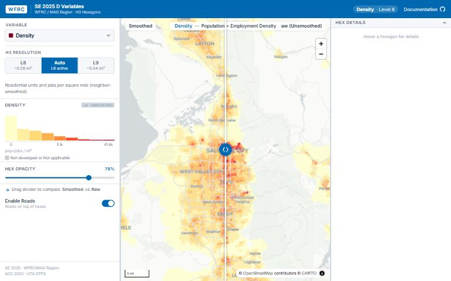
SE2025 H3 Socioeconomic Data Smoothing
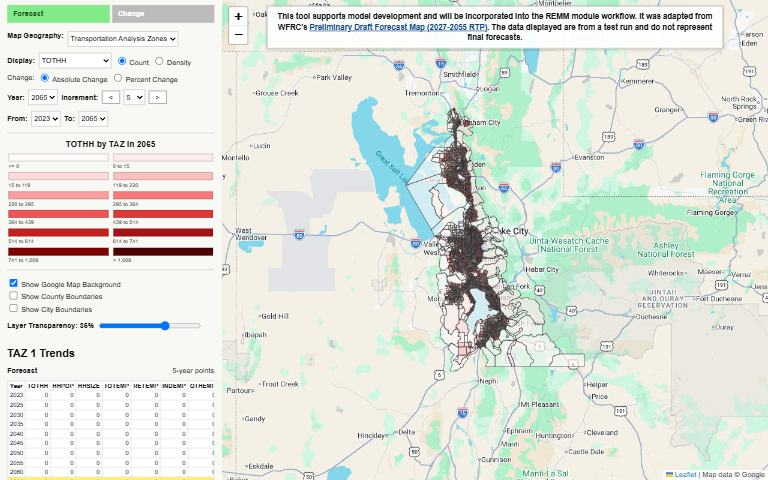
This tool is used to help REMM model development. Will be incorporated into our REMM module workflow.
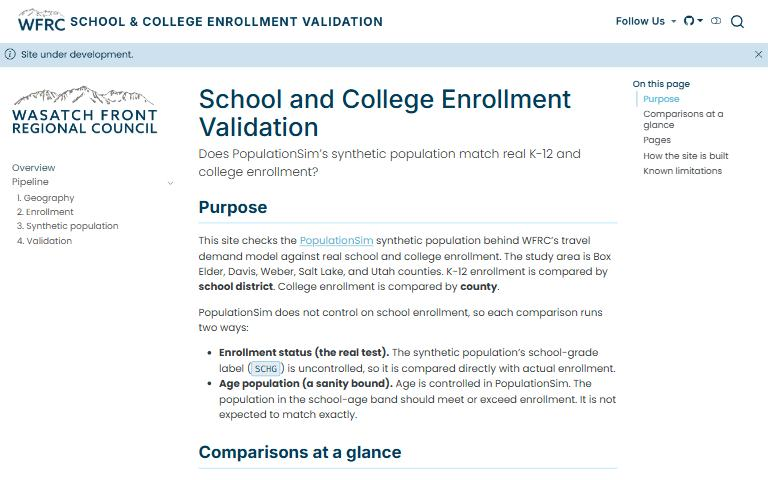
Validates the synthetic population against real K-12 and college enrollment.
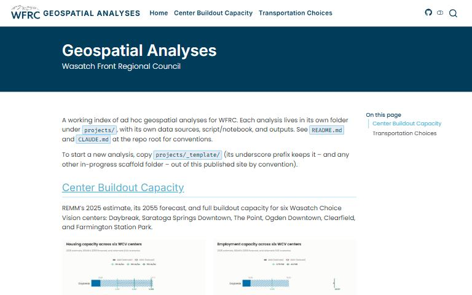
A repo for any ad-hoc GIS analysis.
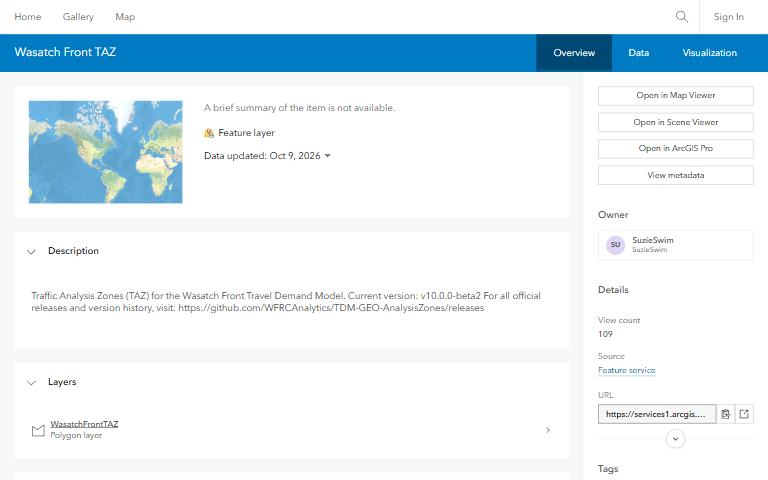
The source of truth for TAZ (and MAZ in the future) used in the Wasatch Front Travel Demand Modeling or any other applications.
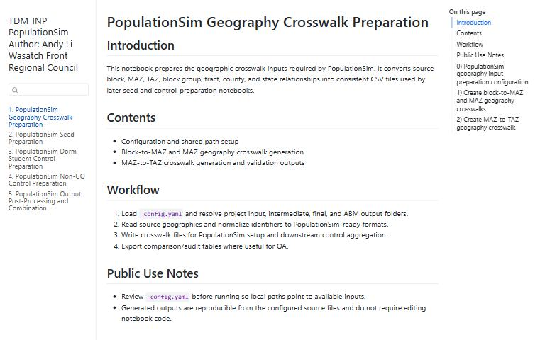
Prepare Input Data for PopulationSim
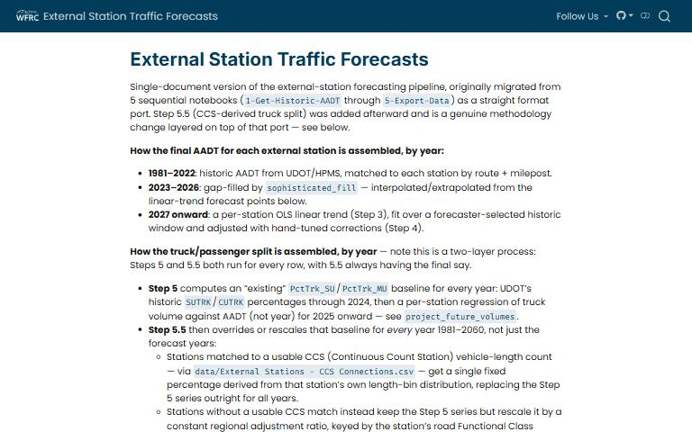
Volume forecasts for the model’s external stations, published as a single Quarto report.
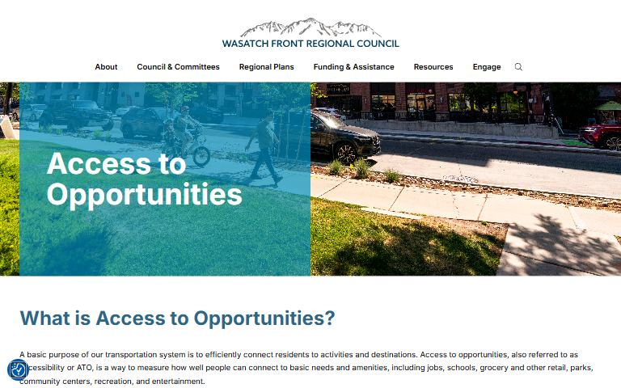
WFRC tool for assessing changes in Access to Opportunity (ATO) resulting from regional mobility investments
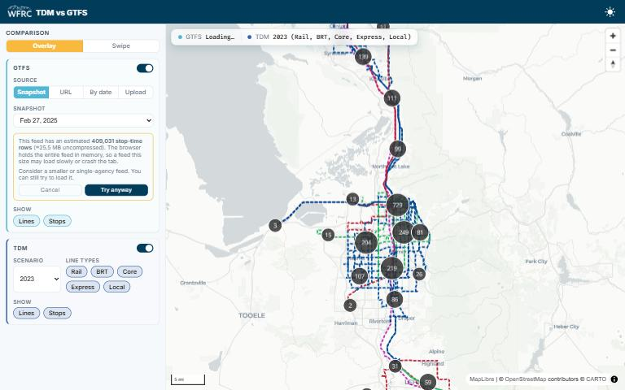
Compare GTFS to TDM LIN files
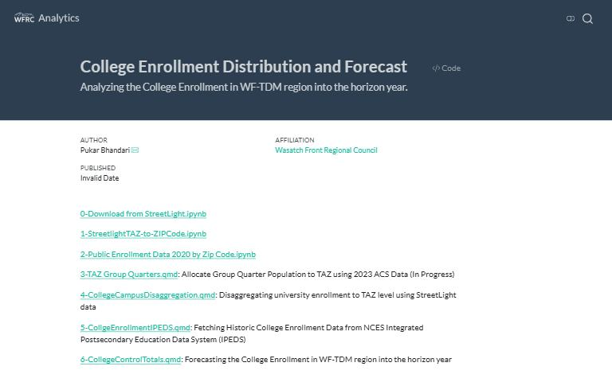
Gathers college enrollment numbers by TAZ for the travel demand model.
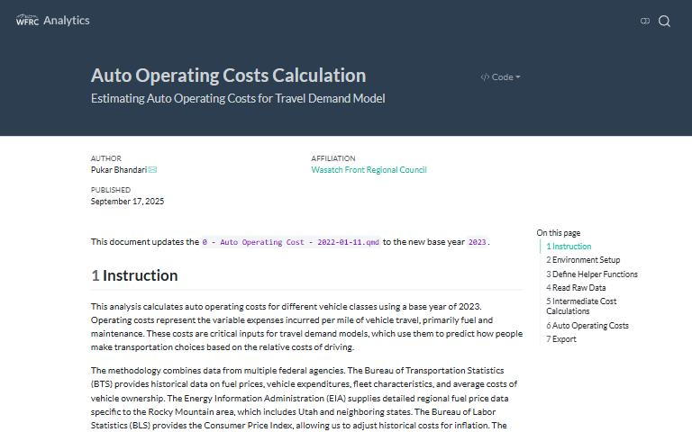
Updates auto operating costs used in the Wasatch Front travel demand model.
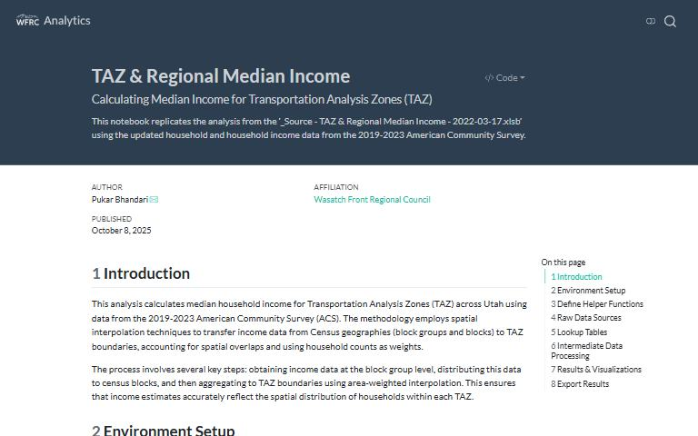
Calculates median household income by traffic analysis zone (TAZ) and for the region, for the travel demand model.
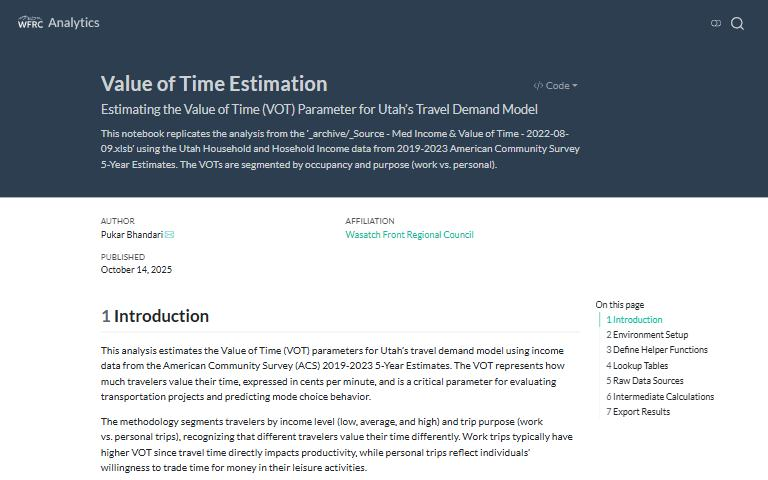
Calculates values of time from ACS person data, segmented by occupancy and work versus non-work trips.
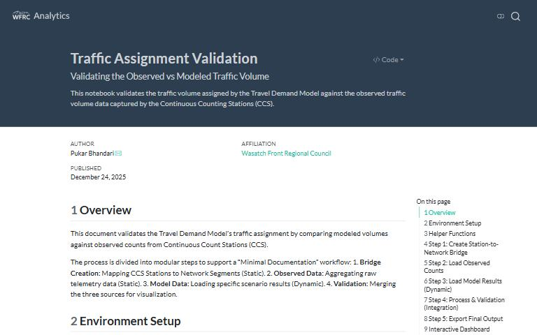
Observed vs model volumes for the CCS data and model data with filters by functional type, time of day, county
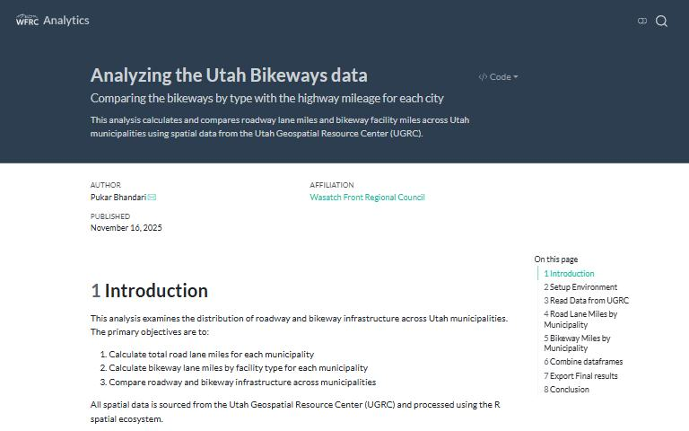
An analysis of bicycle infrastructure compared to roadways
Estimates ratios of bus speed to traffic speed from the congested model network and GTFS schedules.
Land Use and Transportation Information sheet for All Census Tracts in Eligible Opportunity Zones 2.0 List in Utah
one stop shop for delineating microzones for WFRC models
Notebooks and two web apps for traffic volume forecasts: the ART review and adjustment tool, and a public viewer.
The purpose of this repository is to calculate the work at home rates (home based jobs as well as telecommuting). . Requires WFRC GitHub access.
This repo houses all scripts used to estimate model parameters and adjust model inputs that draw on the household travel survey. Requires WFRC GitHub access.
A workspace for calculating phasing criteria scores on a project level basis. Active Transportation, Roadway & Transit. Requires WFRC GitHub access.
This repo is for processing True Shape Network out of UGRC Roadway Centerlines dataset
Summarizing the state school enrollment data at the TAZ level.
The purpose of this repository is to calibration and then estimate coefficients/constants for the HBW destination choice model. . Requires WFRC GitHub access.
Workspace for the v10 commercial vehicle model, including consultant deliverables and supporting process files. Requires WFRC GitHub access.
Mode choice calibration for the travel demand model, including commuter rail (CRT) distance groups and vehicle ownership categories. Requires WFRC GitHub access.
This repo contains python scripts used to calibrate the friction factors for the WFTDM. It also includes the data munging necessary to produce observed trip length frequency charts. . Requires WFRC GitHub access.
use county controls, building square feet, and dws to distribute job spaces at a taz level. Requires WFRC GitHub access.
Estimates county-level socioeconomic control totals for the v10 travel demand model.
Development branch for Housing ATO Calculator Web App. Requires WFRC GitHub access.
Analysis of primary homes created in SAP’s since adoption of the plans. Requires WFRC GitHub access.
Notebook that splits parcels into smaller units for use in REMM inputs.
Estimates age-group shares (0-17, 18-64, 65+) for each TAZ from census blocks and ACS data.
Aggregates Access to Opportunity results to the Big 5 geographies and converts them to a file geodatabase.
Forecast percentage of HH, pop, and employment within REMM modeling area vs within the UDOT space
Defines the household life cycle categories (children and seniors) used in the model.
Analysis for improving the model’s commuter rail (CRT) component: boardings, drive-access distance, distance frequency and station-to-station pairs, checked against observed data.
Create an extended version of the housing unit inventory with additional geographic attributes
Exploration of detecting parking lots from imagery with ArcGIS deep learning.
Create road composition and socioeconomic variables for similar TAZ
Processes and summarizes StreetLight truck data for the model.
TDM-Census-Block-to-TAZ
Reclassifies and renumbers TAZs using ArcGIS and spatial data.
Assigns each TAZ to a census tract GEOID by spatial join of TAZ centroids.
Scripts that renumber transit line files to new network node numbers.
Defines external pass-through trips by merging a national network with the statewide model. Requires WFRC GitHub access.
Notebook demo of using Pandas to merge TDM-ATO Outputs
Compares daily transit boardings by mode and route between a base and a proposed transit scenario.
Calculates average model commute times for RTP performance measures, regionally and for Equity Focus Areas.
Plots Access to Opportunity travelsheds from model skims.
Trip statistics and maps comparing centered development and transit intensity.
Land use calculations for testing centers and transit strategies in the 2027 RTP.
Land use calculations for testing BRT and LRT on three transit corridors. Requires WFRC GitHub access.
explore recalculated ato values using geopandas
Code base for calculating traffic analysis zone (TAZ) based workplace Access To Opportunities metrics
2023 WFRC RTP phasing criteria. Requires WFRC GitHub access.
Joins Transportation Improvement Program project layers with the public comments received on them.
Test geoprocessing capabilities and ease of installation of various open source geospatial libraries
Builds a lookup between parcels and TAZ IDs.
Creating a dataset that contains TAZID and ZIPCode information
Notebook comparing the model’s mode share and transit boardings with survey and observed data.
UTA Boardings and On-Board Survey Data from fall 2019. Requires WFRC GitHub access.
Scripts for validating and viewing model outputs before the v9.1.0 release.
This notebook calculates descriptive statistics (including the average) of SE values of multiple REMM runs
Process TAZ level REMM output to various TAZ 9.0.0 geographies for SE Data Reviewer Web App
A set of tools to merge individually owned units into Owned Unit Groupings in a Parcel Dataset
Workspace to inspect, check and convert base year data into REMM-ready inputs. Requires WFRC GitHub access.
REMM-SE-Comparison-Tools
Notebooks and scripts for various REMM-related tasks
REMM TAZ-level SE review environment
Random forest analysis to select the top variables for REMM estimation.
Process progression metrics output for use in the web app
REMM-Input-Data-Prep-2019
Process modeling results and animate as a gif file